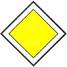
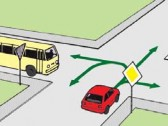
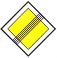
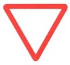
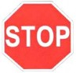
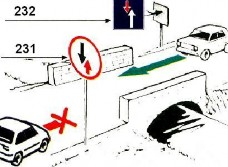
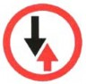
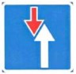

Дорога, на которой водитель пользуется правом преимущественного проезда нерегулируемых перекрестков по отношению к водителям транспортных средств, движущихся по второстепенной дороге.



Водитель должен уступить дорогу транспортным средствам, движущимся по пересекаемой дороге, а при наличии таблички 834 - по главной дороге, либо транспортным средствам, движущимся по дороге, на которой предоставлено право преимущественного проезда. Знак, установленный на главной дороге, обозначает одновременно конец главной дороги.

Водитель обязан остановиться перед стоп-линией, а при ее отсутствии - у перекрестка перед краем пересекаемой проезжей части, в прочих местах - перед знаком. Водитель обязан уступить дорогу транспортным средствам, движущимся по пересекаемой дороге, а при наличии таблички 834 - по главной дороге, либо транспортным средствам, движущимся по дороге, на которой предоставлено право преимущественного проезда.


Водитель обязан уступить дорогу водителю транспортного средства, находящегося на узком участке дороги или подъезде к нему.
